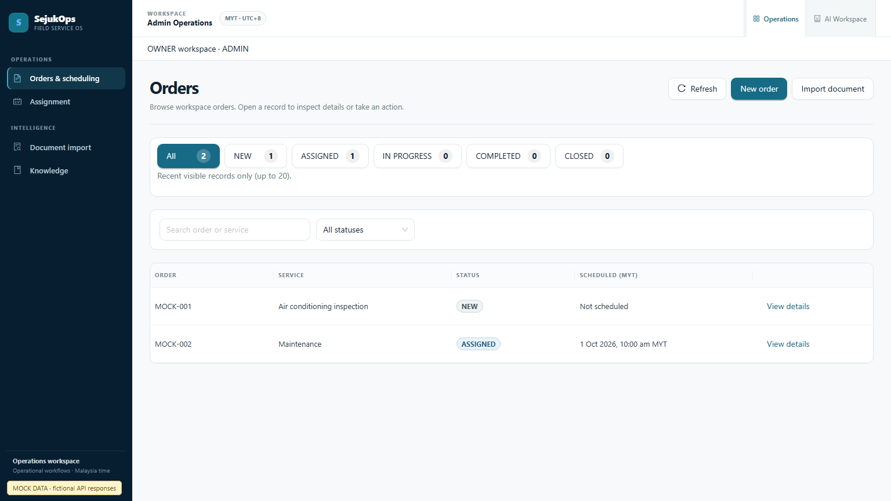
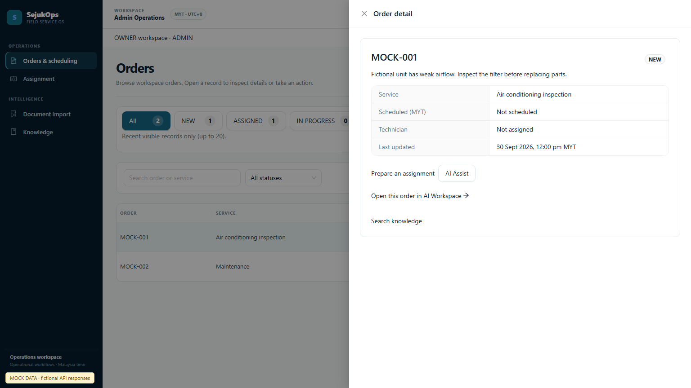
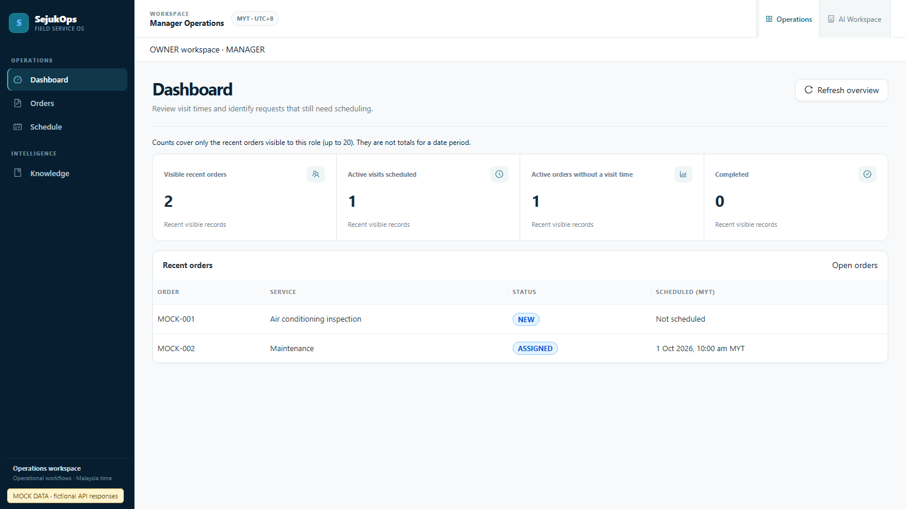
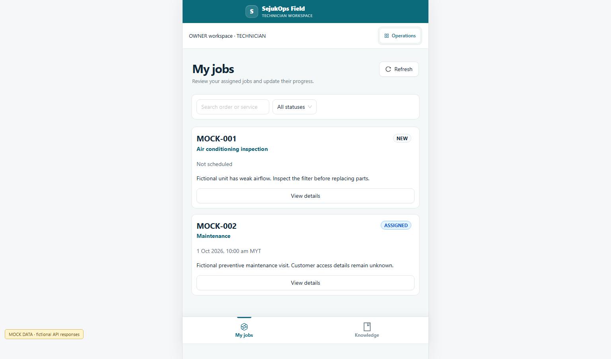
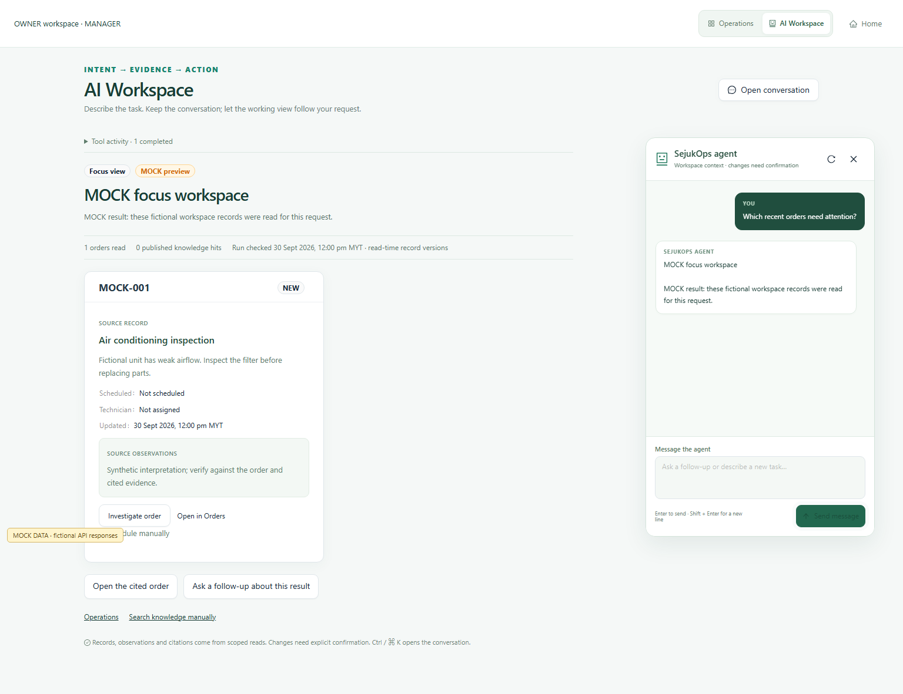
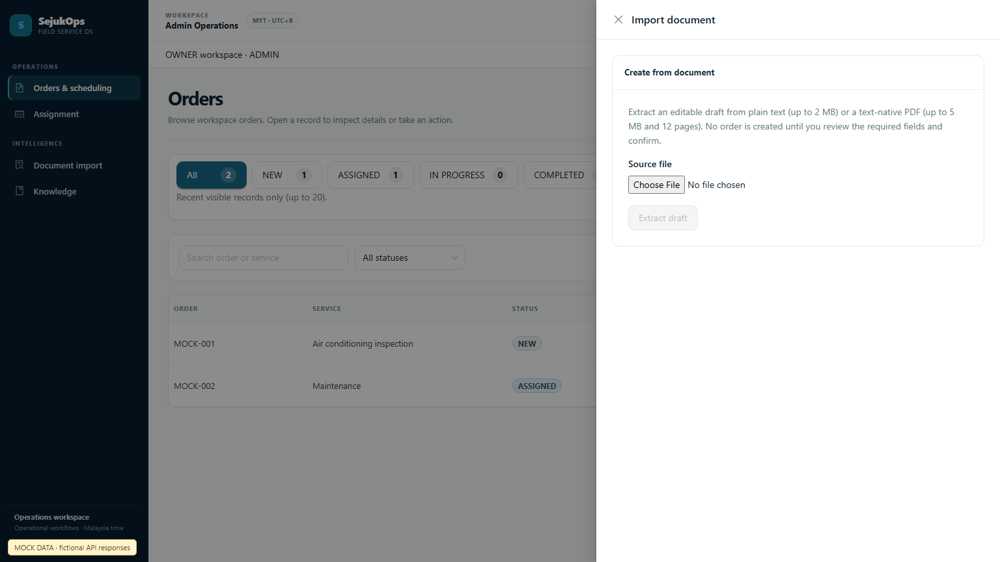

Admin — Orders
Historical page spacing, title divider, separate toolbar and table card.

Admin — Order detail
Drawer with the same quiet card and field styling.

Manager — Dashboard
Current bounded counts with the actual project theme.

Technician — My jobs
Task cards without an extra containing card or redundant gutter.

AI Workspace
Product design unchanged; preview now uses the same application theme.

Admin — Import
Existing intake form and permissions retained.
